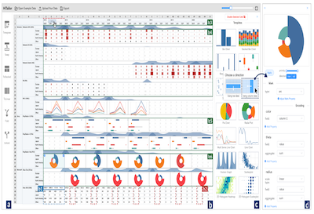
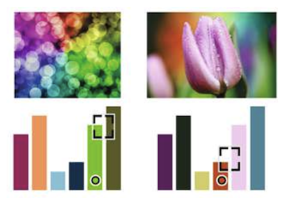
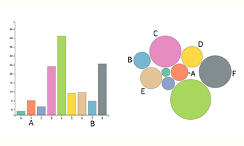
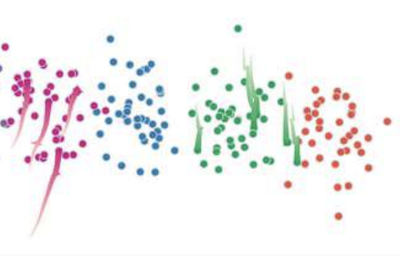
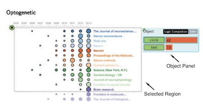
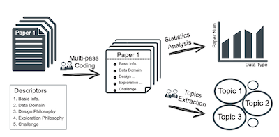
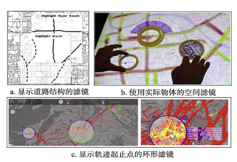
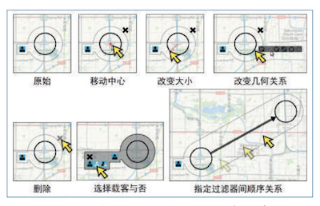

Publications
2022

Enhancing Static Charts with Data-driven Animations
Min Lu*, Noa Fish, Shuaiqi Wang, Joel Lanir, Daniel Cohen-Or and Hui Huang
IEEE Transactions on Visualization and Computer Graphics, 28(7): 2628 - 2640, 2022
Paper (1.82 MB) | Project Homepage | Source Code (Javascript)
Min Lu*, Noa Fish, Shuaiqi Wang, Joel Lanir, Daniel Cohen-Or and Hui Huang
IEEE Transactions on Visualization and Computer Graphics, 28(7): 2628 - 2640, 2022
Paper (1.82 MB) | Project Homepage | Source Code (Javascript)

HiTailor: Interactive Transformation and Visualization for Hierarchical Tabular Data (VIS'22)
Guozheng Li, Runfei Li, Zicheng Wang, Chi Harold Liu, Min Lu*, and Guoren Wang
IEEE Transactions on Visualization and Computer Graphics (to be appeared)
Paper (2.2 MB) | Video (263.8 MB) | Project Homepage
Guozheng Li, Runfei Li, Zicheng Wang, Chi Harold Liu, Min Lu*, and Guoren Wang
IEEE Transactions on Visualization and Computer Graphics (to be appeared)
Paper (2.2 MB) | Video (263.8 MB) | Project Homepage

Image-guided Color Mapping for Categorical Data Visualization
Qian Zhen, Min Lu*, Sicong Wu, Ruizhen Hu, Joel Lanir and Hui Huang
Computational Visual Media, 2022
Paper (0.8 MB)
Qian Zhen, Min Lu*, Sicong Wu, Ruizhen Hu, Joel Lanir and Hui Huang
Computational Visual Media, 2022
Paper (0.8 MB)
2021

Modeling Just Noticeable Differences in Charts (VIS'21)
Min Lu*, Joel Lanir, Chufeng Wang, Yucong Yao, Wen Zhang, Oliver Deussen and Hui Huang
IEEE Transactions on Visualization and Computer Graphics, 28(1): 718-726, 2021
Paper (2.1 MB) | Open Sourced Experiment Data | My Talk at VIS 2021
Min Lu*, Joel Lanir, Chufeng Wang, Yucong Yao, Wen Zhang, Oliver Deussen and Hui Huang
IEEE Transactions on Visualization and Computer Graphics, 28(1): 718-726, 2021
Paper (2.1 MB) | Open Sourced Experiment Data | My Talk at VIS 2021
2020

Exploring Visual Information Flows in Infographics (CHI'20)
Min Lu*, Chufeng Wang, Joel Lanir, Nanxuan Zhao, Hanspeter Pfister, Daniel Cohen-Or and Hui Huang
In Proceedings of the 2020 CHI Conference on Human Factors in Computing Systems (pp. 1-12). 2020.
PDF (2 MB) | MP4 (21.1 MB) | InfoVIF dataset (2.1G) Online VIF Explorer | My Talk at CHI 2020
Min Lu*, Chufeng Wang, Joel Lanir, Nanxuan Zhao, Hanspeter Pfister, Daniel Cohen-Or and Hui Huang
In Proceedings of the 2020 CHI Conference on Human Factors in Computing Systems (pp. 1-12). 2020.
PDF (2 MB) | MP4 (21.1 MB) | InfoVIF dataset (2.1G) Online VIF Explorer | My Talk at CHI 2020

Temporal Scatterplots (CVM'20)
Or Patashnik, Min Lu*, Amit H. Bermano and Daniel Cohen-Or
Computational Visual Media, 2020. 6, 385–400
PDF (1.6 MB) ( Honorable Mention Award in CVM Journal 2020)
Honorable Mention Award in CVM Journal 2020)
Or Patashnik, Min Lu*, Amit H. Bermano and Daniel Cohen-Or
Computational Visual Media, 2020. 6, 385–400
PDF (1.6 MB) (
Honorable Mention Award in CVM Journal 2020)2019

Winglets: Visualizing Association with Uncertainty in Multi-class Scatterplots (VIS'19)
Min Lu*, Shuaiqi Wang, Joel Lanir, Noa Fish, Yang Yue, Daniel Cohen-Or and Hui Huang
IEEE Transactions on Visualization and Computer Graphics, 26(1):770-779, 2019.
PDF (2.7 MB) | Source Code (Python) | My Talk at VIS 2019
Min Lu*, Shuaiqi Wang, Joel Lanir, Noa Fish, Yang Yue, Daniel Cohen-Or and Hui Huang
IEEE Transactions on Visualization and Computer Graphics, 26(1):770-779, 2019.
PDF (2.7 MB) | Source Code (Python) | My Talk at VIS 2019
2017

Visual Analysis of Multiple Route Choices based on General GPS Trajectories
Min Lu*, Chufan Lai, Tangzhi Ye, Jie Liang, and Xiaoru Yuan
IEEE Transactions on Big Data, 3(2): 234-247, 2017
PDF (1.2MB)
Min Lu*, Chufan Lai, Tangzhi Ye, Jie Liang, and Xiaoru Yuan
IEEE Transactions on Big Data, 3(2): 234-247, 2017
PDF (1.2MB)

Interaction+: Interaction Enhancement for Web-based Visualizations (PacificVis'17)
Min Lu*, Jie Liang, Yu Zhang, Guozheng Li, Siming Chen, Zongru Li and Xiaoru Yuan
In Proceedings of IEEE Pacific Visualization Symposium (PacificVis 2017), Seoul, Korea. April 18-21, 2017.
PDF (1.5 MB) | MP4 (14.9 MB)
Min Lu*, Jie Liang, Yu Zhang, Guozheng Li, Siming Chen, Zongru Li and Xiaoru Yuan
In Proceedings of IEEE Pacific Visualization Symposium (PacificVis 2017), Seoul, Korea. April 18-21, 2017.
PDF (1.5 MB) | MP4 (14.9 MB)
2016

Frontier of Information Visualization and Visual Analytics in 2016
Min Lu*, Siming Chen, Chufan Lai, Lijing Lin, and Xiaoru Yuan
Journal of Visualization, 1-20, 2017
PDF (1.59MB)
Min Lu*, Siming Chen, Chufan Lai, Lijing Lin, and Xiaoru Yuan
Journal of Visualization, 1-20, 2017
PDF (1.59MB)

Exploring OD Patterns of Interested Region based on Taxi Trajectories (ChinaVis'15)
Min Lu*, Jie Liang, Zuchao Wang, and Xiaoru Yuan
Journal of Visualization, 19(4): 811-821, 2016.
PDF (2.1 MB)
Min Lu*, Jie Liang, Zuchao Wang, and Xiaoru Yuan
Journal of Visualization, 19(4): 811-821, 2016.
PDF (2.1 MB)

Filter in Visualization of Geospatial Data
Min Lu*, and Xiaoru Yuan
Journal of Computer-Aided Design & Computer Graphics, 28:702-711, 2016. (In Chinese)
PDF (2.3 MB)
Min Lu*, and Xiaoru Yuan
Journal of Computer-Aided Design & Computer Graphics, 28:702-711, 2016. (In Chinese)
PDF (2.3 MB)

Visual Analysis of Urban Micro Traffic Behaviour
Min Lu*, Zuchao Wang, Siming Chen, Tangzhi Ye, and Xiaoru Yuan
Communications of the CCF, 12(8):32-39, 2016. (in Chinese)
PDF (1.5 MB) (Invited Paper)
Min Lu*, Zuchao Wang, Siming Chen, Tangzhi Ye, and Xiaoru Yuan
Communications of the CCF, 12(8):32-39, 2016. (in Chinese)
PDF (1.5 MB) (Invited Paper)
2015
Visual Analysis of Route Choice Behaviour based on GPS Trajectories
Min Lu*, Chufan Lai, Tangzhi Ye, Jie Liang, and Xiaoru Yuan
ACM SIGKDD Workshop on Urban Computing, Sydney, Australia, August 10, 2015.
PDF (0.9 MB)
Min Lu*, Chufan Lai, Tangzhi Ye, Jie Liang, and Xiaoru Yuan
ACM SIGKDD Workshop on Urban Computing, Sydney, Australia, August 10, 2015.
PDF (0.9 MB)
TrajRank: Exploring Taxi Travel Behaviour on a Route by Trajectory Ranking (PacificVis'15)
Min Lu*, Zuchao Wang, and Xiaoru Yuan
In Proceedings of IEEE Pacific Visualization Symposium , pages 311-318, Hangzhou, April 14-17, 2015.
PDF (1.9 MB)
Min Lu*, Zuchao Wang, and Xiaoru Yuan
In Proceedings of IEEE Pacific Visualization Symposium , pages 311-318, Hangzhou, April 14-17, 2015.
PDF (1.9 MB)
OD-Wheel: Visual Design to Explore OD Patterns of a Central Region (PacificVis'15)
Min Lu*, Zuchao Wang, Jie Liang, and Xiaoru Yuan
In Proceedings of IEEE Pacific Visualization Symposium , pages 87-91(Notes), Hangzhou, April 14-17, 2015.
PDF (1.2 MB)
Min Lu*, Zuchao Wang, Jie Liang, and Xiaoru Yuan
In Proceedings of IEEE Pacific Visualization Symposium , pages 87-91(Notes), Hangzhou, April 14-17, 2015.
PDF (1.2 MB)
Visual Exploration of Sparse Traffic Trajectory Data (VAST'14)
Zuchao Wang, Tangzhi Ye, Min Lu*, Xiaoru Yuan, Huamin Qu, Jacky Yuan, and Qianliang Wu
IEEE Transactions on Visualization and Computer Graphics , 20(12):1813-1822, 2014.
PDF (1.5 MB)
Zuchao Wang, Tangzhi Ye, Min Lu*, Xiaoru Yuan, Huamin Qu, Jacky Yuan, and Qianliang Wu
IEEE Transactions on Visualization and Computer Graphics , 20(12):1813-1822, 2014.
PDF (1.5 MB)
Visual Traffic Jam Analysis Based on Trajectory Data (VAST'13)
Zuchao Wang, Min Lu*, Xiaoru Yuan, Junping Zhang, and Huub van de Wetering
IEEE Transactions on Visualization and Computer Graphics, 19(12):2159-2168, 2013.
PDF (1.7 MB)
Zuchao Wang, Min Lu*, Xiaoru Yuan, Junping Zhang, and Huub van de Wetering
IEEE Transactions on Visualization and Computer Graphics, 19(12):2159-2168, 2013.
PDF (1.7 MB)
Posters
Visual Exploration of Style in Well-designed Diagrams (PacificVis'18)
Min Lu*
In Proceedings of IEEE Pacific Visualization Symposium, Kobe, Japan, April 10-13, 2018.
( Best Poster Award)
Min Lu*
In Proceedings of IEEE Pacific Visualization Symposium, Kobe, Japan, April 10-13, 2018.
(
Best Poster Award)
Filter+: Interaction Argument for Web-based Visualizations (ChinaVis'16)
Min Lu*, Jie Liang, Zongru Li, Siming Chen, and Xiaoru Yuan
ChinaVis 2016, Changsha, Hunan, China, July 21-23, 2016.
( Best Poster Award)
Min Lu*, Jie Liang, Zongru Li, Siming Chen, and Xiaoru Yuan
ChinaVis 2016, Changsha, Hunan, China, July 21-23, 2016.
(
Best Poster Award)
Visual Analysis of Route Choice Behaviour based on GPS Trajectories (VIS'15)
Min Lu*, Chufan Lai, Tangzhi Ye, Jie Liang, and Xiaoru Yuan
IEEE VIS 2015, Chicago, Illinois, USA, October 24-30, 2015.
Min Lu*, Chufan Lai, Tangzhi Ye, Jie Liang, and Xiaoru Yuan
IEEE VIS 2015, Chicago, Illinois, USA, October 24-30, 2015.
Scalable Multivariate Volume Visualization and Analysis (VIS'11)
Hanqi Guo, He Xiao, Min Lu*, and Xiaoru Yuan
IEEE Symposium on Large-Scale Data Analysis and Visualization 2011 (Poster), Providence, RI, USA, October 23-24, 2011.
Hanqi Guo, He Xiao, Min Lu*, and Xiaoru Yuan
IEEE Symposium on Large-Scale Data Analysis and Visualization 2011 (Poster), Providence, RI, USA, October 23-24, 2011.